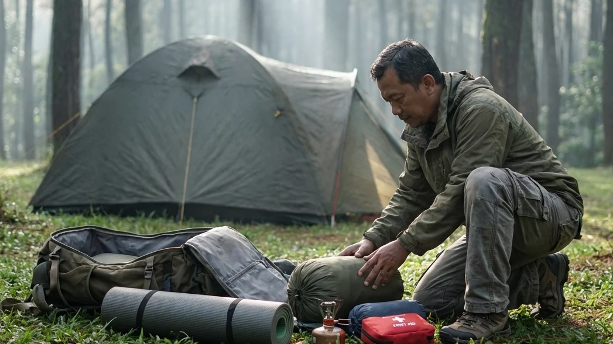

1. Keberhasilan Kemah Dimulai dari Persiapan (Packing)
Melarikan diri ke alam bebas seringkali dibayangkan sebagai sebuah aktivitas yang santai dan penuh kebebasan. Namun, para petualang berpengalaman sangat paham bahwa alam tidak pernah berkompromi dengan kecerobohan. Berada di tengah hutan pegunungan berarti Anda terputus dari kemudahan peradaban kota. Di titik inilah, isi dari tas ransel (carrier) yang Anda bawa akan menentukan apakah liburan Anda akan menjadi pengalaman yang luar biasa menyenangkan, atau justru berubah menjadi penderitaan fisik yang menyiksa.
Oleh karena itu, menyimak secara detail wacana bertajuk Daftar Alat2 Camping Esensial: Panduan Persiapan untuk Petualangan Alam yang Praktis adalah sebuah keharusan mutlak sebelum Anda beranjak dari rumah. Kesalahan umum para pemula adalah terlalu banyak membawa barang yang tidak fungsional (overpacking), namun malah melupakan peralatan vital penunjang nyawa. Melalui panduan komprehensif ini, kita akan merinci secara sistematis daftar barang wajib yang harus Anda miliki, membaginya ke dalam sistem-sistem krusial (seperti sistem tidur dan pakaian), serta memberikan edukasi teknis mengapa barang tersebut sangat tidak boleh diremehkan.
2. Sistem Tempat Tinggal (Shelter System)
Tenda adalah benteng pertahanan terakhir Anda melawan amukan cuaca ekstrem di pegunungan (seperti di Batu Malang atau kawasan serupa). Jangan pernah asal membeli tenda hanya karena bentuknya lucu atau harganya murah.
Tenda Dome Double Layer Anti Badai
Jika Anda berniat bermalam di alam terbuka yang otentik, Anda WAJIB membawa atau menyewa tenda dome bertipe Double Layer (dua lapis). Tenda satu lapis (*single layer*) akan membuat Anda mandi keringat dingin, sebab uap panas dari napas Anda akan menabrak atap tenda dan menetes kembali menjadi embun air (fenomena kondensasi). Pada tenda double layer, lapisan luar (flysheet) berbahan Waterproof PU akan menangkis seluruh air hujan dan menampung embun kondensasi tersebut, sementara lapisan jaring bagian dalam (inner) akan memastikan Anda tetap bisa bernapas dengan lega dan bebas dari tetesan air.
Pasak Ekstra dan Tali Pancang (Guy Lines)
Kerangka fiberglass atau alloy pada tenda hanyalah pembentuk struktur. Yang membuat tenda Anda sanggup menahan hantaman badai angin adalah pasak (pegs) dan tali pancang (guy lines). Pastikan Anda membawa pasak ekstra. Tariklah tali flysheet dari tenda Anda dan patoklah ke tanah dengan kuat. Menarik tali flysheet ini amat krusial untuk memastikan kain lapisan luar tidak menempel pada kain jaring dalam, yang mana persentuhan tersebut akan menyebabkan air hujan merembes masuk membasahi area tidur Anda.
BACA JUGA (Edukasi Berkemah Otentik):
3. Sistem Tidur (Sleep System) Penghalau Hipotermia
Kualitas istirahat (recovery) di malam hari sangat menentukan stamina Anda untuk berpetualang esok harinya. Jangan pernah membiarkan hawa dingin tanah mencuri panas tubuh Anda.
Matras Isolator (Spons dan Aluminium Foil)
Sebagian orang mengira matras dibawa hanya agar punggung tidak sakit terkena kerikil. Itu pemahaman yang keliru! Fungsi utama matras adalah sebagai isolator suhu. Tanah di gunung memiliki suhu yang jauh lebih dingin dari tubuh Anda, dan ia akan menyerap hawa panas Anda secara konduksi. Sebagai perlindungan standar, gelarlah matras aluminium foil (bagian mengkilap menghadap ke atas) agar panas tubuh Anda memantul kembali, kemudian tumpuk dengan matras spons (busa eva) atau matras angin untuk memberikan keempukan.
Kantong Tidur (Sleeping Bag) Berbahan Polar
Singkirkan selimut rumah atau kain sarung Anda. Di gunung, angin akan dengan mudah menyelinap melalui rongga selimut. Bawalah kantong tidur (Sleeping Bag) bertipe Mummy (mengerucut di bagian kaki dan memiliki tudung penutup kepala). Desain ketat ini berfungsi menghilangkan ruang hampa (dead space) di dalam kantong, sehingga tubuh Anda tidak perlu membuang kalori berharga hanya untuk menghangatkan ruang kosong. Pastikan lapisan dalam (inner) sleeping bag Anda terbuat dari bahan polar hangat atau dacron tebal yang mampu mengikat suhu secara optimal.
4. Sistem Pakaian (Layering System) yang Aman
Pakaian di alam bebas bukanlah soal penampilan *fashionable* untuk difoto, melainkan tentang peralatan penunjang kehidupan (life support).
Pakaian Dasar (Base Layer) dan Insulasi (Mid Layer)
Terapkan prinsip 3-Layering System. Lapis terdalam yang menempel di kulit (Base Layer) SANGAT DILARANG menggunakan bahan katun karena katun lambat mengering dan akan mengikat keringat menjadi es. Gunakanlah bahan *dry-fit* yang cepat menguapkan keringat. Setelah itu, kenakan lapis kedua (Mid Layer) berupa jaket fleece (polar) atau *sweater* rajut yang berfungsi sebagai *oven* pemerangkap hawa panas alami tubuh.
Jaket Penahan Angin (Windbreaker) dan Kupluk
Sehangat apapun jaket polar Anda, panasnya akan seketika tersapu jika dihantam angin kencang. Tutupi pertahanan Anda dengan lapis terluar (Outer Layer) berupa jaket parasut tebal windbreaker atau tipe *hardshell* yang *waterproof* (tahan air). Jangan lupa melindungi bagian kepala Anda dengan memakai kupluk rajut (beanie), serta lindungi tangan dan kaki dengan sarung tangan kain dan kaus kaki ganda.

Mempersiapkan alat penerangan berupa senter kepala (headlamp) saat langit mulai gelap adalah langkah antisipasi wajib agar Anda tetap bisa beraktivitas dengan kedua tangan secara leluasa.5. Peralatan Dapur dan Logistik Makanan (Camp Cooking)
Di alam bebas, tubuh Anda memerlukan asupan kalori ekstra untuk dibakar menjadi energi (metabolisme) guna melawan hawa ekstrem.
Kompor Portabel, Windshield, dan Nesting
Bawalah kompor gas portabel lipat yang sangat ringkas, serta cadangan tabung gas kaleng (hi-cook). Karena Anda berada di alam terbuka, sangat vital untuk membawa windshield (lempengan pelindung angin dari aluminium) agar api kompor Anda tidak mudah padam tertiup angin. Untuk tempat memasaknya, bawalah panci bersusun aluminium khusus petualang yang biasa disebut dengan nesting.
Air Minum dan Makanan Padat Kalori
Sediakan perbekalan air mineral yang sangat melimpah untuk minum dan memasak. Pilih bahan makanan yang padat kalori namun cepat disajikan, seperti corned beef, telur, sosis ayam, mi instan, dan madu sachet. Menyeduh segelas minuman panas (kopi hitam, teh manis, atau jahe merah) sebelum tidur di dalam tenda adalah trik jitu untuk menaikkan suhu internal tubuh dan mencegah masuk angin.
6. Alat Penerangan, Navigasi, dan Darurat
Hutan dan pegunungan tidak dilengkapi lampu jalanan. Kegelapan total akan langsung menyergap begitu matahari terbenam.
Headlamp (Senter Kepala) dan Baterai Cadangan
Mengandalkan senter dari lampu flash smartphone akan menguras baterai HP Anda dalam sekejap. Senter genggam biasa juga merepotkan karena menyita satu tangan Anda. Bawalah Headlamp (senter yang diikat di kepala); ia sangat efisien dan membebaskan kedua tangan Anda (hands-free) untuk memasak, memegang tali tenda, atau mencuci piring. Sertakan pula lampu gantung khusus tenda (tent lantern) dan baterai cadangan ekstra.
Kotak P3K (First Aid Kit) Pribadi
Jadilah petualang yang bertanggung jawab atas kesehatan Anda sendiri. Susunlah First Aid Kit kecil dalam wadah kedap air yang berisi: obat penurun demam (paracetamol), obat anti mabuk perjalanan, obat diare/mules, plester luka (band-aid), antiseptik (povidone iodine), balsam/minyak kayu putih untuk dada, serta obat-obatan spesifik yang Anda butuhkan (misal inhaler untuk asma). Sertakan sebuah peluit *survival* sebagai alat minta tolong jika terpisah dari rombongan, serta beberapa kantong trash bag besar untuk mengangkut turun semua sampah Anda.
BACA JUGA (Opsi Kemah Praktis):
7. Opsi Praktis: Menyewa Alat Kemah di Lokasi
Jika membaca rincian spesifikasi peralatan di atas membuat Anda merasa ciut karena harus berinvestasi membeli alat senilai jutaan rupiah, Anda tidak perlu membatalkan niat liburan. Industri pariwisata luar ruang masa kini telah berevolusi menghadirkan solusi Comfort Camping.
Pengelola kawasan wisata kemah profesional (seperti di Batu Sunrise Camp) memahami kebutuhan warga urban yang mendambakan petualangan otentik namun enggan direpotkan oleh urusan logistik berat. Mereka melayani penyewaan paket All-In. Di paket ini, tenda tipe gunung double layer telah berdiri dengan kokoh di lahan asri sebelum Anda tiba. Di dalamnya telah disiapkan lapisan matras ekstra tebal dan sleeping bag wangi. Ditambah ketersediaan aliran listrik dan toilet duduk yang super bersih di area ground, Anda tetap bisa menikmati keliaran hutan pinus Batu tanpa harus menabung lama untuk membeli peralatan berat tersebut.
8. Kesimpulan
Meminimalisir risiko celaka di alam bebas adalah indikator utama kesuksesan sebuah perjalanan. Dengan membedah secara teknis Daftar Alat2 Camping Esensial: Panduan Persiapan untuk Petualangan Alam yang Praktis ini, kita menjadi paham bahwa persiapan (packing) bukanlah tentang seberapa banyak barang yang dibawa, melainkan seberapa presisi fungsi utilitas dari barang tersebut. Menguasai manajemen Sleep System yang mumpuni, memadupadankan Layering System pada pakaian, dan memiliki perlengkapan darurat (P3K & Headlamp) adalah hukum mutlak yang harus dipatuhi. Bila melengkapi semua peralatan tersebut dirasa memberatkan secara material dan tenaga, opsi Comfort Camping yang menyewakan tenda komplit siap pakai di destinasi semacam Batu Sunrise Camp adalah alternatif cerdas yang amat layak Anda manfaatkan. Susunlah checklist Anda dengan bijak malam ini, dan bersiaplah menyambut petualangan tanpa rasa was-was di penghujung pekan nanti!